본문 콘텐츠 영역 About Santa Maria Novella is a cosmetic brand that originated from a pharmacy created by monks of Santa Maria Novella Cathedral in Florence, Italy, in 1221. Santa Maria Nobel began to gain recognition through its excellent efficacy in various medicines and household goods, including rose water, which has sterilization and disinfection effects made of herbs grown by monks. Since then, it has been known to the public as the "world's first pharmacy," and the main store in Florence, where the pharmacy is located, has become a tourist attraction. Santa Maria Nobel has become a world-class cosmetic brand, producing cosmetics such as perfume, basic face, body supplies, soap, and air fresheners, as the raw materials and traditional techniques used by monks more than 400 years ago. Product 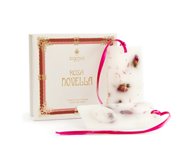 Rosa Novella Scented Wax Tablets 24,00 € 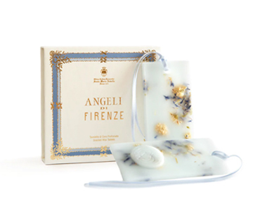 Angeli di Firenze Scented Wax Tablets 24,00 € 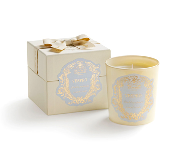 Vespro Scented Candle 65,00 € 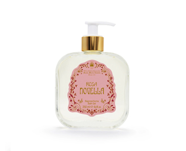 Rosa Gardenia Bath Gel 50,00 € 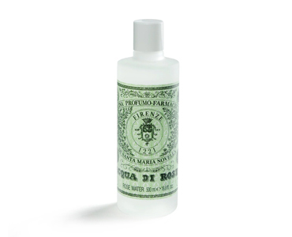 Acqua di Rose 30,00 € 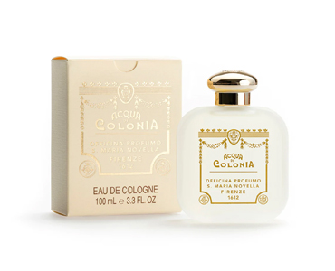 Colonia Russa 43,00 € 다음제품보기 이전제품보기 팝업닫기 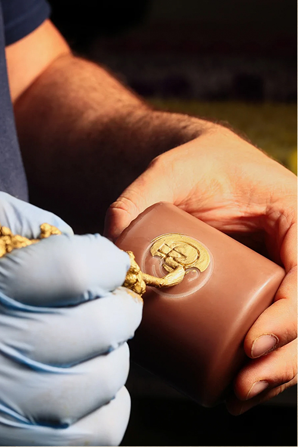 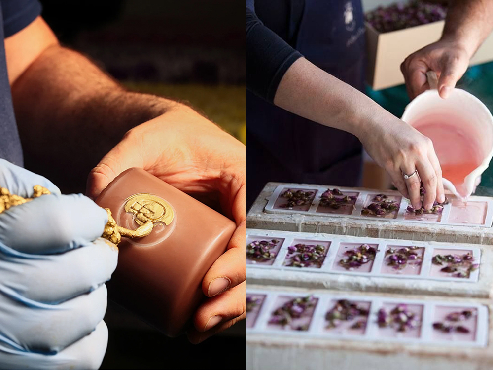 HandCraft #handmade #natural All products are made using herbs and natural oils, inheriting the ancient ways of monks. The herbs used must be grown in the Florence area, and no animal testing is performed on any product. The Santa Maria Novella factory maintains many processes manually, including packaging, labeling, brush painting, carving, and potpourri. In 2012, the package was renewed to mark the 400th anniversary of its launch. It also released a 2012 limited edition of Aqua di Colonia 1612, a commemorative perfume that combines the scent of Ottone and Porcellana from the East. In the same year, it launched "Albadi Seoul," a perfume commemorating Seoul, and put a picture of photographer Bae Byung-woo's pine tree in the perfume case. 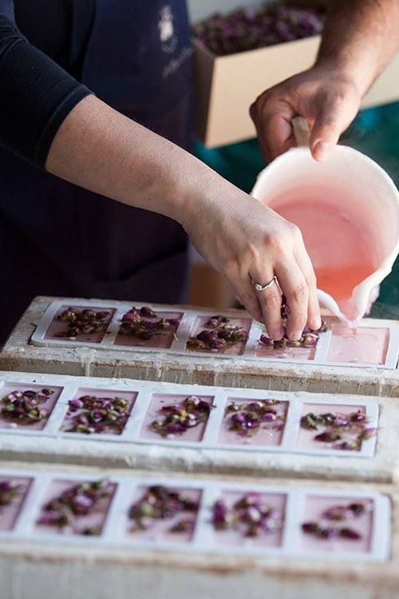 Gallery 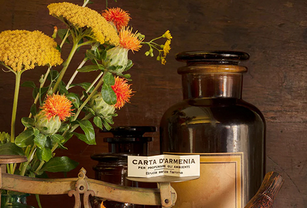 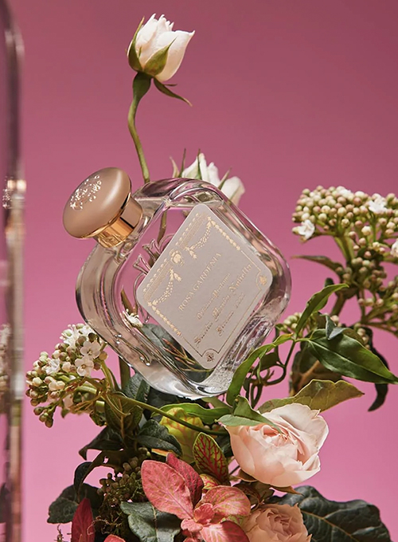 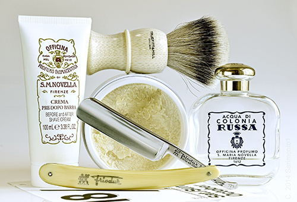 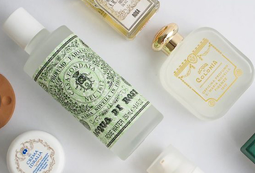 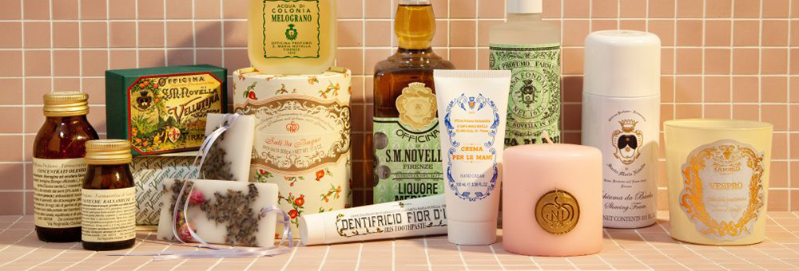